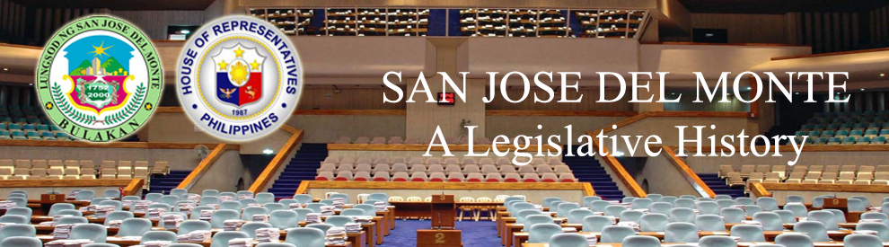

| History |
| Legislators |
| Laws |
| About |
 |
CITY OF SAN JOSE DEL MONTE
The following text/information are lifted from the book of Lee W. Vance entitled Tracing your Philippine Ancestors which was published in Provo, Utah by Stevenson’s Genealogical Center in 1980 and Symbols of the State by the Department of Interior and Local Government of the Republic of the Philippines in 1998.
Early accounts on the founding of this town, as gathered from the old people, yielded information that it was formerly a part of the town of Meycauayan. The town reportedly got its name from Saint Joseph whose statue was found was a veritable forest; the hunters called it San Jose Del Monte. In all probability, the hunters reported their find to the parish priest of Meycauayan. It was said that the priest built a stone church at the site where the town proper is now located. The statue was installed in the new church.
The City of San Jose del Monte (CSJDM) (in Filipino: Lungsod ng San Jose del Monte) is a first class urban component city in the province of Bulacan, Philippines. It is bordered by Caloocan City and Quezon City, both in Metro Manila, in the south; by Rodriguez, Rizal in the east; Santa Maria and Marilao, both of Bulacan, in the west and Norzagaray, Bulacan in the north. According to the 2007 census, it has a population of 439,090 inhabitants marking the 19th Most Populated City in the Philippines.
Following is a timeline1,2,3,4 of events that led to the creation and development of the City of San Jose Del Monte:
| DATE | EVENT |
|
The town of Bulacan was organized by the Spaniards. |
|
The town of San Jose del Monte was organized. |
|
Extant Catholic Church records reveal that the first parish priest was Father Antonio de Moral. He took charge of the parish. The first town inhabitants came from Meycauayan |
|
Americans established a civil provincial government in the province with Malolos as the provincial capital. |
|
The 25 municipalities of Bulacan were reduced to 13 by consolidating Norzagaray with Angat, San Rafael and Bustos and Santa Isabel with Malolos, Marilao with Meycauayan, Obando with Polo, Pulilan with Quingua, San Ildefonso with San Miguel, and San Jose with Santa Maria. |
|
The province of Bulacan was created under Act 2711. |
|
At the advent of the American rule, it was made a part of Sta. Maria |
|
At the height of the Huk activity, the town was raided |
|
The town was raided for the second time |
|
By virtue of R.A. No. 8797, the municipality of San Jose Del Monte, Bulacan was converted into a component city to be known as the City of San Jose Del Monte. |
|
R.A. No. 8797 was amended by virtue of R.A. No. 9230. |
|
City of San Jose del Monte is divided into 59 barangays. These barangays are grouped into 2 districts and the city has a Lone District. |
Sources:
1 Vance, L. W. (1980). Tracing your Philippine ancestors. Provo, Utah: Stevenson's Genealogical Center.
2 Velasco, C. R. and Untivero, R. G. (1998). Symbols of the State. Manila: National Media Production Center.
3 Bulacan, Philippines: San Jose del Monte City, Bulacan: History. Retrieved May 18, 2010 from the Province of Bulacan website: http://www.bulacan.gov.ph/sjdm/history.php
4 San Jose del Monte City. Retrieved May 18, 2010 from the Wikipedia website: http://en.wikipedia.org/wiki/San_Jose_del_Monte_City

Congressional Library Bureau
Legislative Library Service